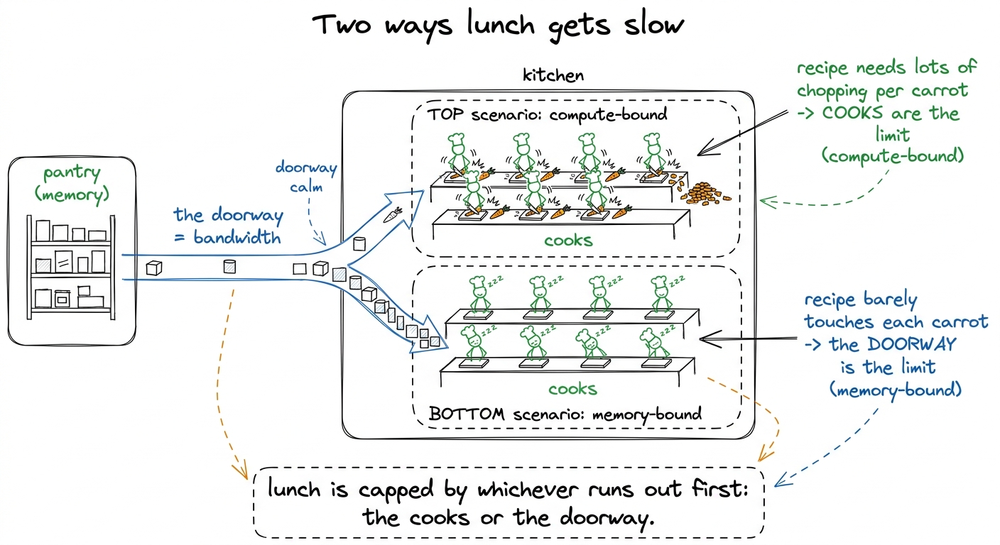
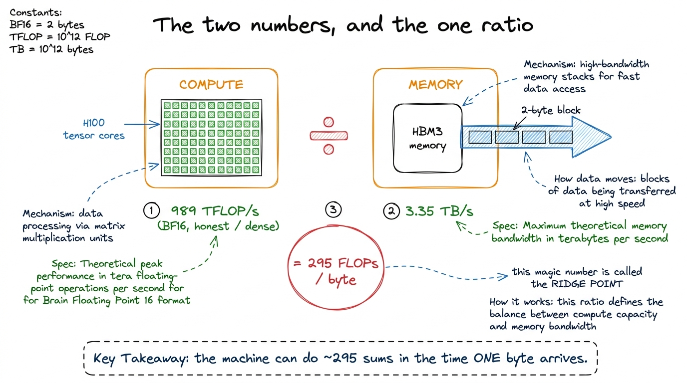
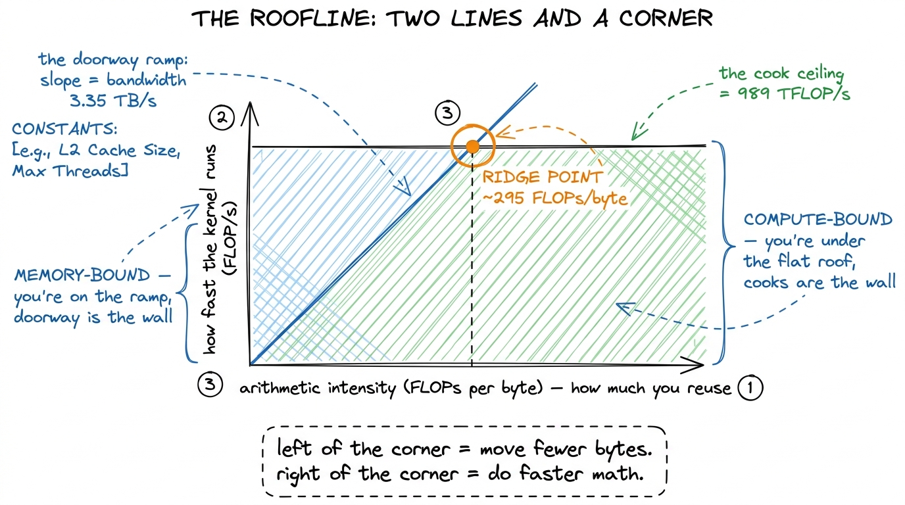
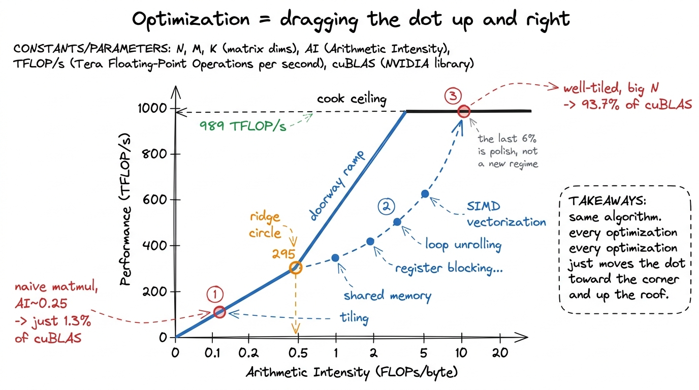

The roofline, drawn simply
By the end of this chapter you'll be able to stand at a whiteboard, draw one plot, and teach a student who has never seen it the single most important picture in kernel engineering — the one that says, before you write any code, the fastest a kernel could ever go and which wall is stopping it. Students think this plot is scary. It has log axes and a Greek-sounding name. It is not scary. It is two lines and a corner. That's the whole thing. Let's build it so it feels obvious.
The one thing the roofline answers
Here is the question every kernel engineer is secretly asking: is my code slow because the machine is doing too much math, or because it can't move the data fast enough? Those are the only two walls. The roofline is the picture that tells you which wall you're hitting — and, better, tells you the ceiling, the fastest you could ever possibly go.
Don't say the word "roofline" yet. Draw the picture first. Name it last.
Metaphor: the kitchen with a narrow doorway
You already have the kitchen from the CPU-vs-GPU chapter. Reuse it. The GPU is a cafeteria — thousands of cooks who can chop and scoop blindingly fast. But the ingredients live in a pantry down the hall, and there's only one narrow doorway between the pantry and the kitchen.
Two things can slow lunch down. Maybe the cooks are genuinely maxed out — every cook chopping as fast as human hands allow. That's a compute limit; you literally cannot cook faster. Or maybe the cooks are standing around, and the real jam is the doorway — ingredients trickle in too slowly. That's a bandwidth limit; the cooks are fine, the hallway is the problem.

figure rendering · The whole roofline in a kitchen: a fixed cooking speed and a fixed dooThat's the entire idea. Two speeds — how fast you can cook, how fast you can deliver — and the recipe decides which one bites. Now let's put numbers on the two speeds.
The two numbers, from the machine
Every GPU hands you exactly two hard ceilings. Write them on the board and circle them; the whole chapter hangs off these two.
Peak compute — how much math the chip can do per second. On an H100, the tensor cores do about 989 TFLOP/s in BF16. That's 989 trillion multiply-adds every second. That's the cooks' top speed.
Peak bandwidth — how many bytes per second you can pull from the GPU's memory (called HBM). On an H100, that's about 3.35 TB/s. That's the doorway's top speed.
Now do the one division that makes the whole model click. How many math operations can the cooks do in the time it takes one byte to squeeze through the doorway?
989e12 FLOP/s ÷ 3.35e12 byte/s ≈ 295 FLOPs per byte
figure rendering · Two hardware numbers, one division, and the ridge point that falls outThe recipe's number: arithmetic intensity
The 295 belongs to the machine. Now the recipe — your kernel — has its own matching number: how many math operations does it do for each byte it drags in from memory? That's called arithmetic intensity. Long name, dead-simple idea: FLOPs done, divided by bytes moved.
arithmetic intensity = total math done / total bytes moved from memoryLet's do it by hand with a tiny example, because a number you compute yourself is a number you believe.
c = a + b. You read 4 numbers of a, read 4 of b, write 4 of c. In BF16 each number is 2 bytes, so that's 12 numbers × 2 = 24 bytes moved. And the math? Just 4 additions. So arithmetic intensity = 4 FLOPs ÷ 24 bytes ≈ 0.17 FLOPs per byte. Compare to the ridge of 295. You're not close — you're nearly two thousand times below it. This kernel will never trouble the cooks. It's all doorway.Now compare that to a big matrix multiply — the operation the whole workshop exists to speed up. A square N × N matmul does about 2N³ FLOPs but only moves about 3N² numbers (the three matrices). So its arithmetic intensity is roughly N/3 — and crucially, it grows with N. For a small matrix it's tiny. For N = 8192 it's in the thousands, far past 295.
Now draw the plot — two lines and a corner
Here's the reveal. Take the two speeds, and instead of two separate facts, draw them as two lines on one chart.
- Sideways axis: arithmetic intensity (the recipe's reuse). Left = low reuse, right = high reuse.
- Up axis: how fast the kernel actually runs (FLOP/s).
Draw two lines:
- The bandwidth ramp — a diagonal line rising from the bottom-left. It's the doorway limit. If you're doorway-limited, then the more reuse you have, the more real work you get per byte, so speed rises steadily. Slope = your bandwidth.
- The compute ceiling — a flat horizontal line across the top at 989 TFLOP/s. It's the cooks' limit. No matter how much reuse you have, the cooks cannot chop faster than this. Flat roof.
The ceiling is whichever line is lower at your recipe's spot. That's it. That's the roofline — it literally looks like the roof of a house: a slope going up, then a flat top.

figure rendering · The finished roofline. A sloped bandwidth ramp, a flat compute ceilingThe corner is the whole model
The two lines cross at exactly one spot. That spot is the ridge point — and it's the 295 we already computed, peak compute ÷ peak bandwidth. It splits the world in two.
- To the left of the corner (arithmetic intensity below 295): you hit the sloped ramp first. You're memory-bound. The doorway is your wall. Faster cooks won't help — they're already idle.
- To the right of the corner (arithmetic intensity above 295): you hit the flat roof first. You're compute-bound. The cooks are your wall. A faster doorway won't help — the ingredients are already waiting.
Reading a real kernel off the chart
Now make it concrete by plotting an actual kernel. The naive matrix-multiply kernel — the very first rung of this workshop's GEMM ladder — reuses almost nothing. It re-reads a whole row and column from memory for every single output number. Its arithmetic intensity is about 0.25 FLOPs per byte. That's 1200 times below the ridge. On the plot, it's a dot pinned to the far bottom-left of the ramp.
0.25 × 3.35 TB/s ≈ 0.8 TFLOP/s — a rounding error next to 989. And when you actually run it, it measures at a humiliating 1.3% of cuBLAS (the vendor's fast library). The chart told you it would be terrible before you profiled it. That's the magic students remember: "the plot knew."And every optimization in the four-week workshop — tiling, shared memory, register blocking, vectorized loads — is the same single motion: drag that dot to the right (more reuse, higher arithmetic intensity) until it climbs the ramp and hits the flat roof, then push it up the roof toward the vendor's library. The ladder goes 1.3% → 8.5% → 12.8% → 36.5% → 68.7% → 93.7% of cuBLAS, and on the roofline it's one dot walking up and to the right.

figure rendering · The GEMM ladder as one motion on the roofline: drag the dot right by r1 The bytes in arithmetic intensity mean bytes moved to and from the GPU's main memory (HBM) — not bytes touched. Data that stays on-chip in a cache or shared memory is free. That's exactly why tiling raises arithmetic intensity: it turns memory round-trips into on-chip reuse. You don't do less math; you move fewer bytes.
The roofline as a "when do I stop?" rule
Here's the part that makes senior engineers love this plot. The roofline doesn't just tell you what to fix — it tells you when to quit. When your dot is pressed against the roof, the vendor's own library is sitting on that same roof. The last few percent between you and it aren't a new wall to break; they're the asymptote. You're done.
2 The honest roofline has lowered roofs. The 3.35 TB/s and 989 TFLOP/s are theoretical peaks you never quite reach — real coalescing and operand-delivery losses pull both ceilings down. A working engineer draws their achieved bandwidth and compute as dashed lines just under the theoretical ones and measures headroom against those. A kernel at 70–90% of the honest floor is genuinely excellent; one at 5% has a real bug.
Teaching notes: how to run this at the board
Reveal it in this order and it lands every time:
- The question (2 min). "Two reasons a kernel is slow: cooks maxed out, or doorway too narrow." Don't say "roofline" yet.
- The kitchen (4 min). Draw the pantry, the narrow doorway, the cooks. Act out both failure modes — frantic chopping vs. idle waiting.
- The two numbers (3 min). Write 989 TFLOP/s and 3.35 TB/s. Circle them. Do the division live:
≈ 295 FLOPs per byte. Let the imbalance shock them. - The recipe's number (4 min). Define arithmetic intensity as "reuse." Compute the tiny 4-element add by hand (≈0.17). Then say matmul's is
N/3and grows with size. - Draw the plot (5 min). Sideways = reuse, up = speed. Draw the ramp, then the flat roof. Point out it looks like a house. Mark the corner at 295.
- The one live demo (3 min). Plot the naive matmul dot at 0.25, read its ceiling off the ramp (~0.8 TFLOP/s), then reveal it measures 1.3% of cuBLAS. "The plot knew before we ran it."
- The stop rule (2 min). Dot on the roof = done. That's the payoff.
Two confusions to head off. First, students mix up which axis is which — drill "sideways is reuse, up is speed." Second, they think the ridge point is a goal to land on. It isn't; it's just the border between the two worlds. You want to be under whichever roof is lower, as close to it as you can get — not necessarily at the corner.
You can now teach
- The one question the roofline answers: is my kernel cook-limited (compute) or doorway-limited (memory)?
- The kitchen metaphor — a fixed cooking speed and a fixed doorway speed, and the recipe decides which caps you.
- The two machine numbers (989 TFLOP/s, 3.35 TB/s), the division that gives the ridge point at ~295 FLOPs/byte, and why the machine computes ~295× faster than it feeds itself.
- Arithmetic intensity as "reuse," computed by hand on a tiny example, and why big matmuls have high intensity while element-wise ops have almost none.
- How to draw the roofline — a sloped bandwidth ramp, a flat compute ceiling, a corner — and read which wall a kernel hits from its position.
- The production hook and the stop rule: this is the exact plot FlashAttention and vLLM engineers reason with, and a dot pressed to the roof means you're done — stop grinding the wall you already hit.